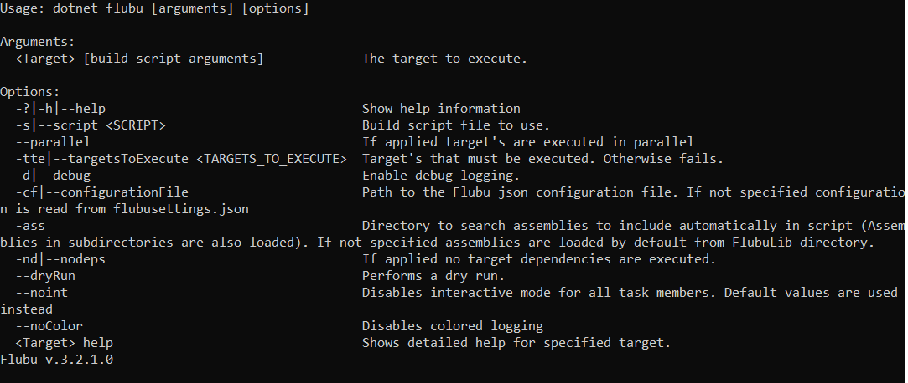

构建脚本运行器
在 .NET 中，你可以通过控制台应用程序 flubu.exe 运行 flubu 构建脚本。可以通过 nuget 添加 Flubu.Runner 以便获取控制台应用程序。
在 .NET Core 中可以用 dotnet 命令或全局工具来运行 flubu 构建脚本。通过 nuget 添加 FlubuCore，将 dotnet-flubu 作为 dotnet cli 工具引入项目。至于如何将其添加为 dotnet cli 工具请移步 入门 一节。
如何使用¶
.NET core 用法：dotnet flubu {TargetToExecute} {Flubu options} {build script arguments}
.NET core 全局工具的用法：flubu {TargetToExecute} {Flubu options} {build script arguments}
.NET 用法：flubu.exe {TargetToExecute} {Flubu options} {build script arguments}
多目标执行¶
.NET core 用法：dotnet flubu {TargetToExecute} {TargetToExecute2} {TargetToExecute3...} {Options}
.NET 用法：flubu.exe {TargetToExecute} {TargetToExecute2} {TargetToExecute3...} {Options}
Target 可以和添加有 -parallel 选项的任务一同执行。
Flubu 选项¶

帮助¶
列出所有可用目标：
flubu help
dotnet flubu help
对特定目标的帮助：
flubu {TargetName} help
dotnet flubu {TargetName} help
这条命令将列出所有描述有执行目标的任务，以及哪些参数可以传递给目标（target）中的特定任务。
应规范 Flubu 的脚本运行。¶
-
最简单的办法就是把构建脚本放在默认位置（你可以在下面找到默认位置的列表）之一。如果它位于默认位置，那么 FlubuCore 将自动执行脚本
flubu {TargetName}。 -
第二个选项是使用
-s来指定脚本位置flubu {TargetName} -s={pathToScriptFile} -
第三个选择是运行
flubu setup并以交互模式（interactive mode）指定脚本和 csproj 文件（可选）的位置。Flubu 会将脚本和 csproj 文件的位置保存在.flubu文件中。如果.flubu文件已存在，那么 FlubuCore 将从该文件中读取脚本和 csproj 文件的位置。把存储位置保存在.flubu文件的另一个好处是不需要在项目根目录下执行脚本。这意味着，即使你的项目位于 "c:_git\myproject" 你也可以在该目录下的任意一个子目录中执行脚本。.flubu文件所在的位置在构建过程（build process）中会被视作「工作目录（work directory）」,「工作目录」会使用基于构建脚本的相对路径。
默认构建脚本的位置*¶
-
"Build.cs"
-
"BuildScript.cs"
-
"DeployScript.cs"
-
"DeploymentScript.cs"
-
"_Build/Build.cs"
-
"_Build/BuildScript.cs"
-
"Build/Build.cs"
-
"Build/BuildScript.cs"
-
"_BuildScript/BuildScript.cs"
-
"_BuildScripts/BuildScript.cs"
-
"BuildScript/BuildScript.cs"
-
"buildscript/deployscript.cs"
-
"buildscripts/buildscript.cs"
-
"buildscripts/deployscript.cs"
-
"BuildScript/DeploymentScript.cs"
-
"BuildScripts/DeploymentScript.cs"